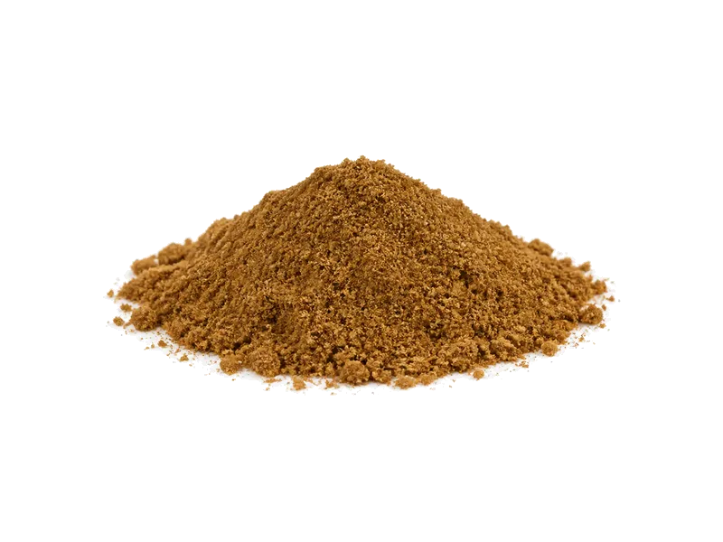

Przyprawy
Przyprawa kmin rzymski (mielony)
Przyprawa kmin rzymski (mielony): 17.8 g białka, 375 kcal, 44.2 g węglowodanów i 22.3 g tłuszczu na 100 g. Kategoria: Przyprawy.
Kalorie375 kcalna 100 g
Białko / proteiny17.8 g
Węglowodany44.2 g
Tłuszcz22.3 g
Cena (szac.)~9,00 złza 100 g
Ceny zaktualizowano: sierpień 2026 (szacunek — ceny w popularnych supermarketach)
Porcja: łyżeczka (3 g)
| Kalorie | 11 kcal |
|---|---|
| Białko | 0.5 g |
| Węglowodany | 1.3 g |
| Tłuszcz | 0.7 g |
| Cena (szac.) | ~0,30 zł |
Szczegółowe składniki odżywcze na 100 g
| Wartość energetyczna (kalorie) | 375 kcal |
|---|---|
| Białko (proteiny) | 17.8 g |
| Węglowodany | 44.2 g |
| Tłuszcz | 22.3 g |
| Tłuszcze nasycone | 7.8 g |
| Tłuszcze nienasycone | 14.5 g |
| Witaminy i minerały (skrót) | Sód, Żelazo, Mangan |
| Współczynnik kcal / 1 g białka | 21.1 |
| Cena produktu (szac. za 100 g) | ~9,00 zł |
| Cena za 100 g białka (szac.) | ~56,18 zł |
Witaminy i minerały na 100 g
Brak zweryfikowanych danych o składzie mikroskładników dla tego produktu. Zamiast podawać przybliżone wartości posiłkujemy się rzetelnymi danymi (USDA / Open Food Facts) — tutaj ich jeszcze nie ma.